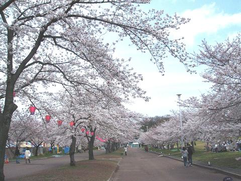

日々、想ふ
〜過去感じたことがつれづれと〜
（できるだけ最大化してお読みください）
日々、想ふ
あっちこっち。４/１２・１３
豊中へ
吹田へ行ったり
戻ったり
タケユキです。
授業は８割が吹田、２割が豊中、
学校関係の手続きは８割豊中、２割が吹田。
このシステム、どうにかなりませんか？
今日の予定：お昼豊中、夕方吹田、夜梅田。
がんばるただ一点それのみ。４/１１
これからが
さらに人生
分岐点
タケユキです。
院の授業が始まりました。
同時に研究室での生活も始まりました。
慣れるまでが大変そう。
これからは特になにごとも要領よくすませなければいけません。
もしかしたら少し更新不定期になるかもしれません。
あまり期待しませぬよう。
今日の日記：少しは期待してくれてもいいかも。
雨・雨・雨。４/１０
雨降って
行く気なくさせ
金なくす
タケユキです。
４月から吹田のキャンパスに通うことになりました。
普段はバイクで通うんだけど雨が降ったらもちろんバイクはなし。
代わりに豊中—吹田キャンパス間を走る無料バスを使うんだけど
なぜかこのバスがまだ春休み期間とか
うつつを抜かして運行していません、運行は１３日からだとか。
ナメてんのか。
バスがだめならモノレールを使うことになります、
このモノレールの運賃がバカ高い、片道３６０円。
往復７２０円。
バイクだと往復のガス代として１００円弱、バスだと無料。
雨の日が続くたびに俺の家計に打撃を与えます。
しかしこの格差はなんやねんモノレールよ。
高いのは走る場所だけにして運賃は下げておくれ。
今日の雨：まだまだ続くそうで。
カットカラーパーマ。４/９
カットして
カラーしてから
パーマして
タケユキです。
今日は髪を切りに行ってきました。
人生初のパーマにも挑戦。
ゆるいパーマだからそんな目立つわけじゃないんだけど
心機一転で新学期をがんばる予定。
でも今週は天気崩れるらしいですよ。
今日のバイク：５，６０kmくらい走った。
出会いと別れ。４/７・８
入学式
その次の日は
送別会
タケユキです。
７日に大学院の入学式。
久しぶりにスーツ着ました、めっさ違和感。
眠たいながらもちゃんと全部おきていましたよ。
８日は昼に塾で小学生と一緒に掛け算の筆算やって
それからバイク飛ばして梅田でバイト。
この日はバイトの後輩の送別会が。
俺のピアスの穴はけっこう大きくて
一度もつけることがなかった昔タイで買ったピアスをあげた。
さみしくなることも多いこの時期、
せめて別れの分だけ出会いもあったらいいなと思う。
今日のバイト：精神的に疲れてましたが。
花見ました。４/６
万博の
公園行って
桜見る
タケユキです。
研究室の花見があったので万博公園に行ってきました。
こっち来て初の万博公園。
けっこう広い、
けっこう桜咲いてる。
桜は今週いっぱいくらいまでが見ごろだとかどうとか。
まだの人は行ってみたらいいですよ。
今日の１枚：万博公園。

食っても。４/５
食べました
それでもお腹は
満たされず
タケユキです。
今日は昼ご飯もしっかり食って、
3時のおやつも食って、
晩ご飯もしっかり食べたのにまだお腹空いてます。
でも体重がちと増えたような気がしなくもないので
今日は我慢してベッドに入るのです、ひとつ成長してるのです。
今日の：春休みもあと1日しかねえじゃん。
一息。４/４
部屋掃除
途中で挫折
風呂入ろ
タケユキです。
新年度を迎えたわけなんで部屋の掃除を。
すでに今年度入って２度目か３度目の部屋掃除なんだけど
途中めんどくなって挫折。
風呂でも入った後に続きやります。
今日の：春休みもあと２日しかねえじゃん。
肉祭り２００６春。４/３
肉食って
もっと肉食って
吐く直前
タケユキです。
今日は高校の関西組プチ同窓会in梅田でした。
焼肉食べ放題＆飲み放題のお店。
食べ過ぎた。
中には卒業以来３年ぶりの人がいてたり、
夏に会ったぞ、みたいな人もいてたり。
高校の頃の気分に浸った１日。
今日の高校の気分にはあの人が足りない：まぁどうしようもないですが。
ほんとにDVDは買わなくてよかったの？４/２
紙一重
帰宅２秒後
どしゃ降りで
タケユキです。
天気が雨が降るかどうかきわどいところで
でも買い物に行っときたかったんでスーパーで食料買って、
ちょっと本屋寄ってそろそろやべえよなと家に帰ったら
マンションの階段上がってる途中、
ザーーーッ
あぶないあぶない。
今日の本屋：「功名が辻」全四巻買いました。
せっかくだし。４/１
今日夜に
ボーリングやって
２００超え
タケユキです。
ええそうですよエイプリルフールですよ。
今日の本当：MAX９３。